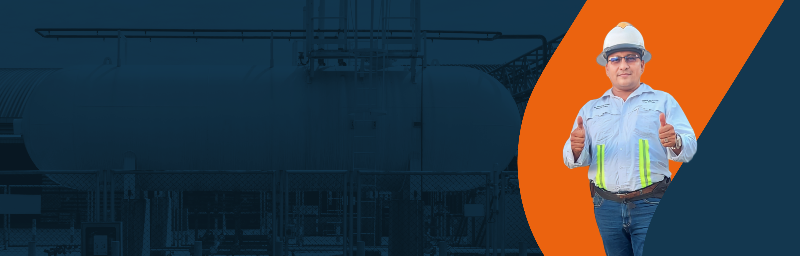

Acerca de Nosotros
Serminasig es una empresa líder en la prestación de servicios de tratamientos químicos industriales. Con una trayectoria de más de [número] años en el mercado, nos hemos destacado por brindar soluciones integrales y de alta calidad a nuestros clientes.
Nuestro compromiso con la excelencia y la innovación nos ha posicionado como referentes en la industria, ofreciendo servicios que abarcan desde la limpieza y preparación de superficies hasta la aplicación de recubrimientos protectores avanzados.
En Serminasig, nos enorgullece contar con un equipo de profesionales altamente capacitados y comprometidos, así como con tecnologías de vanguardia que nos permiten cumplir con los más altos estándares de calidad y seguridad.
